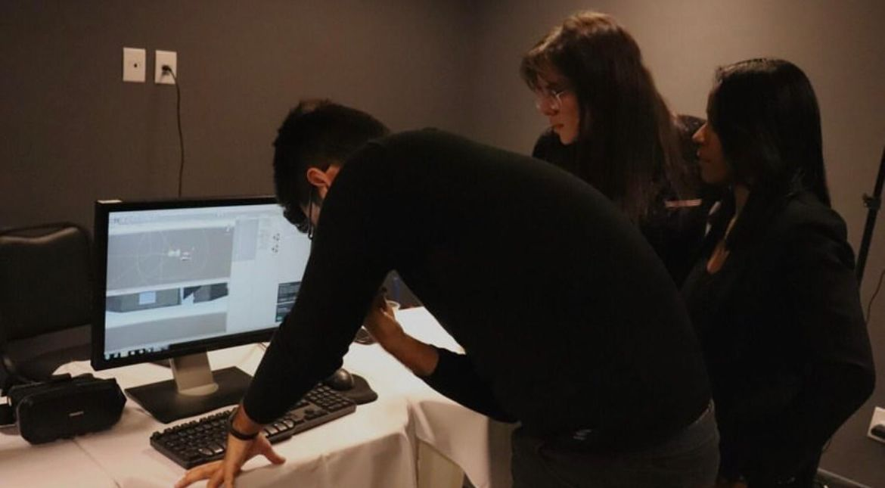

02 de Fevereiro de 2019
Mestrado em Neuroengenharia

Depois da graduação, iniciei meu mestrado em Neuroengenharia, como uma maneira de conectar duas áreas que gosto muito: Tecnologia e Saúde. Pude ter contato mais direto com novas tecnologias, programação e pessoas incríveis, de diversas áreas diferentes, abrindo muitas portas pra um infinito de possibilidades.